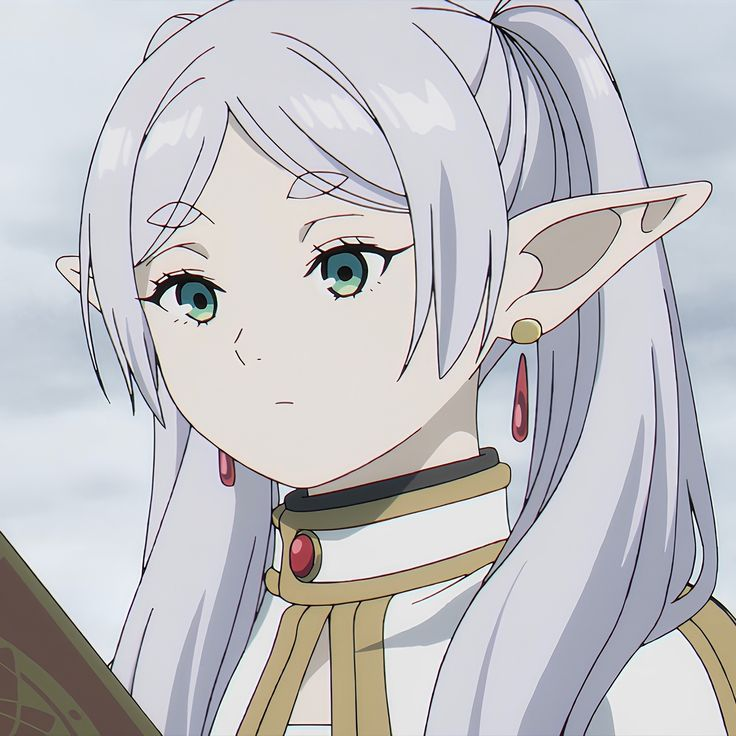
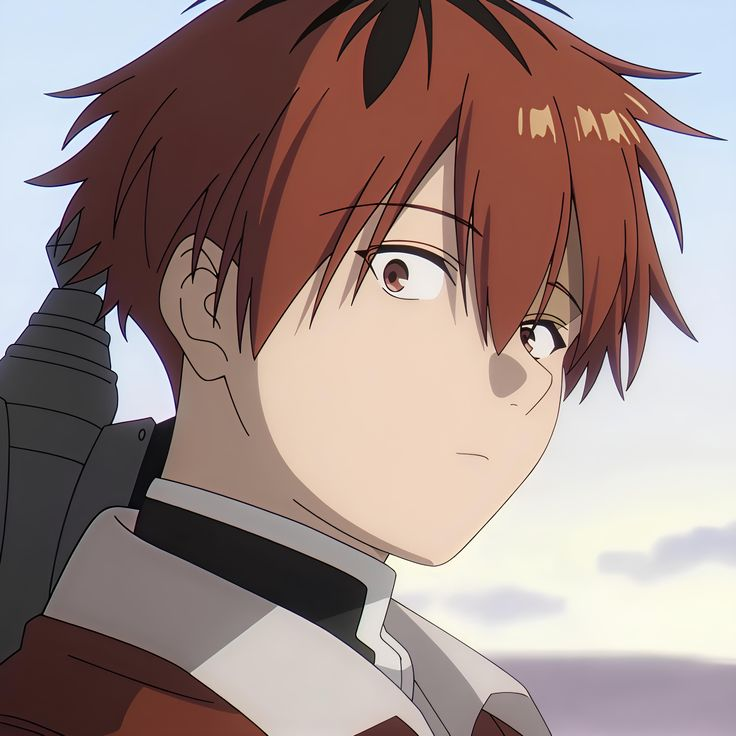
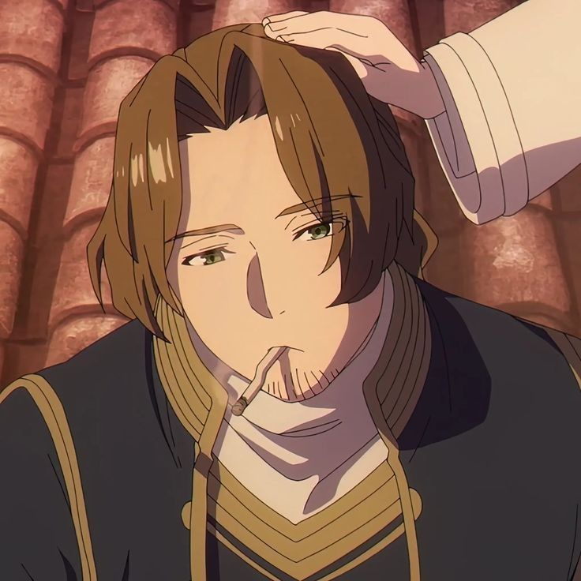

<!-- <!DOCTYPE html>
<html lang="pt-br">
<head>
    <meta charset="UTF-8">
    <meta name="viewport" content="width=device-width, initial-scale=1.0">
    <title>Document</title>
    <link rel="stylesheet" href="characters.css">
</head>
<body>
              <main>
                  <section class="personagem">
                    
                    <h1 class="frieren">Frieren</h1>
                    <p class="frieren">Uma maga elfa que participou da jornada responsável por derrotar o Rei Demônio. Após a morte de seus antigos companheiros, Frieren embarca em uma nova viagem para compreender melhor os sentimentos humanos e o valor do tempo compartilhado com aqueles que amamos.</p>
                    </section>
                    <section class="personagem">
                    
                    <h1>Fern</h1>
                    <p>Aprendiz de Frieren e uma das magas mais talentosas de sua geração. Determinada, responsável e extremamente dedicada aos estudos mágicos, Fern acompanha sua mestra em busca de novos conhecimentos e experiências.</p>
                    </section>
                    <section class="personagem">
                    
                    <h1>Stark</h1>
                    <p>Um jovem guerreiro treinado por Eisen. Apesar de sua personalidade insegura, possui grande coragem e força em batalha. Sua determinação em proteger seus amigos faz dele um companheiro indispensável na jornada.</p>
                    </section>
                    <section class="personagem">
                    
                    <h1>Sein</h1>
                    <p>Sein é um sacerdote talentoso e de meia-idade que se junta brevemente ao grupo da maga Frieren em sua jornada. Embora seja um excelente curandeiro com grande potencial, ele decide deixar o grupo posteriormente para seguir sua própria missão pessoal na esperança de reencontrar um amigo de infância.</p>
                    </section>
              </main>

</body>
</html> -->